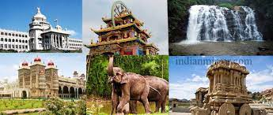
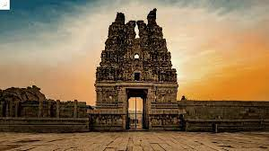

History of Karnataka
Karnataka, formerly (until 1973) Mysore, state of India, located on the western coast of the subcontinent. It is bounded by the states of Goa and Maharashtra to the north, Telangana to the east, Tamil Nadu to the southeast, and Kerala to the south and by the Arabian Sea to the west.
The state extends for about 420 miles (675 km) from north to south and for about 300 miles (480 km) from east to west. Its coastline stretches for some 200 miles (320 km). The capital is Bengaluru (Bangalore), near the southeastern border.
Before the independence of India in 1947, Mysore was a prosperous and progressive but landlocked princely state, with an area of less than 30,000 square miles (78,000 square km), located on the Karnataka Plateau. The transfer of additional territories to the state in 1953 and 1956 united the Kannada-speaking peoples, gave the state an outlet to the sea, and greatly extended its boundaries. The state took its present name, a Kannada word meaning “lofty land,” in 1973. Area 74,051 square miles (191,791 square km). Pop. (2011) 61,130,704.
Mr. Basavaraj Bommai sworn
Chief Minister Of Karnataka
CULTURES
Karnataka possesses a rich cultural heritage, compounded by the contributions of successive dynasties, which have fostered various religions and philosophies that, in turn, have influenced literature, architecture, folklore, music, painting, and other arts.

The town of Shravanabelagola, 56 miles (90 km) from Mysuru, is especially significant for its ancient buildings and monuments. It contains notable examples of architecture from the Mauryan empire (c. 321–185 BCE), as well as a colossal 10th-century stone figure of Bahubali (Gommateshvara), the Jain saint.
Indeed, such enormous monolithic Jain statues are peculiar to the Kannada-speaking region of India. The influence of the Chalukya (543–757 CE) and Pallava (4th to 9th century) dynasties is still apparent in temple architecture stemming from the 7th century CE.


vijayanagar - ruins
Portion of the ruins at Vijayanagar, near Hampi, Karnataka, India.
FAMOUS PLACES:
Bangalore

Coorg

Hampi

Badami, Aihole and Pattadakal

Kabini

Jog Falls

Mangalore

FESTIVLAS
Karnataka has many places that make their way to the heritage of India according to UNESCO
- Ganesha Chaturthi
It is the day that we celebrate in devotion to Lord Ganesha, son of Lord Shiva and Parvati.
- Ugadi
It is a popular festival in the Karnataka, Andhra, and Telangana regions which is celebrated with a lot of joy and fervour.
- Hampi Festival
Young local boys dress up as military from the golden era and line up in the lanes of Hampi.
- Gowri Festival
This is a festival celebrated one day before Ganesh Chaturthi as a day to pay tribute to goddess Gowri, mother of Lord Ganesha.
- Karaga
Karaga is a folk dance performed as a ritual dedicated to Draupadi. It is one of the oldest festivals performed in the Bengaluru.
- Pattadakal Dance Festival
The Pattadakal dance festival is organised every year on a very large scale by the Karnataka Government in the month of January to honour and celebration of all its famous temples.